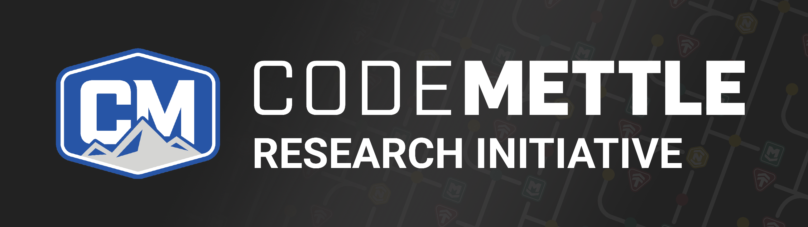
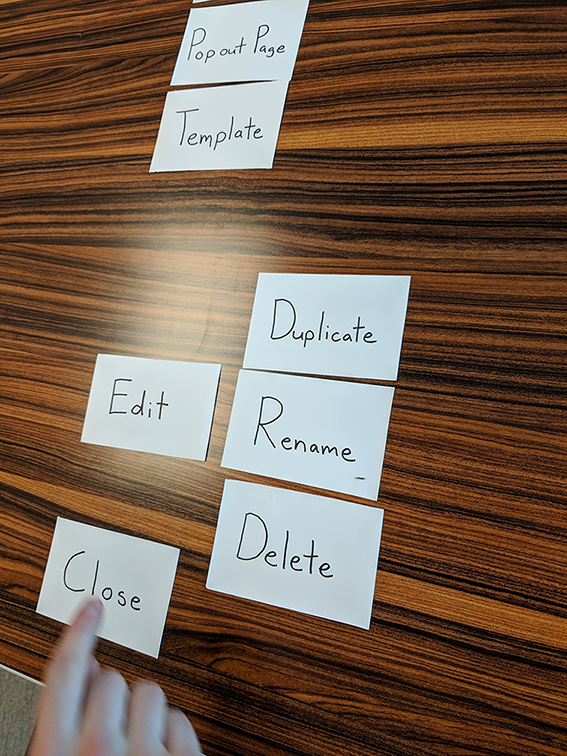
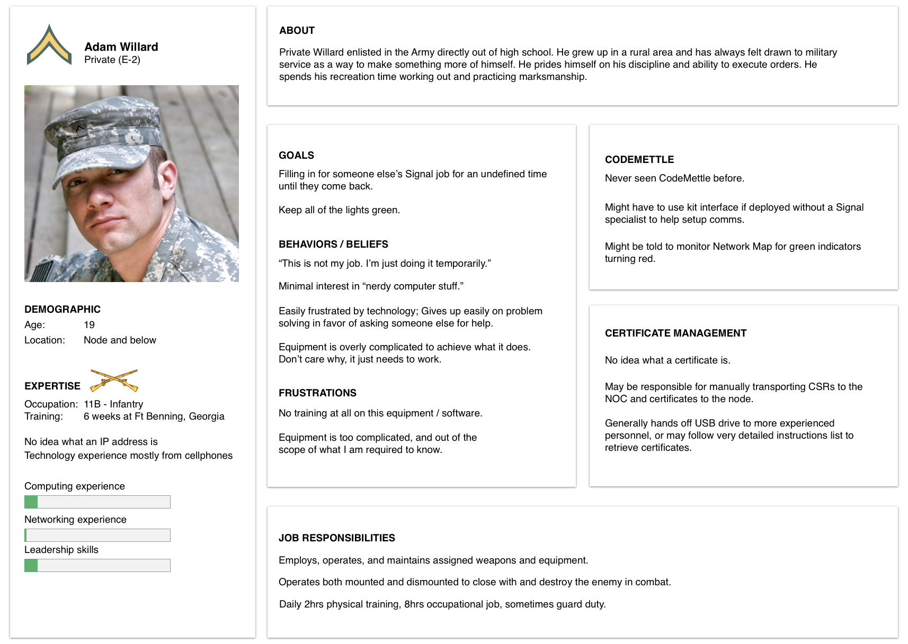
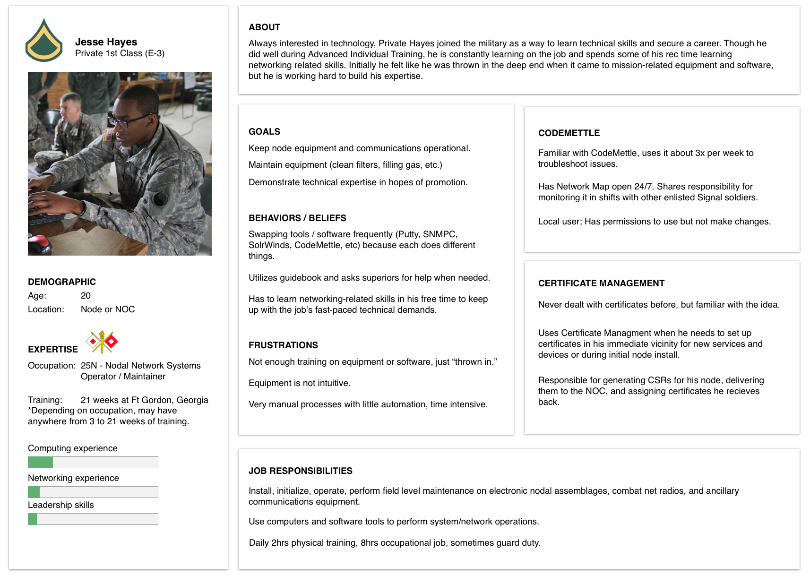
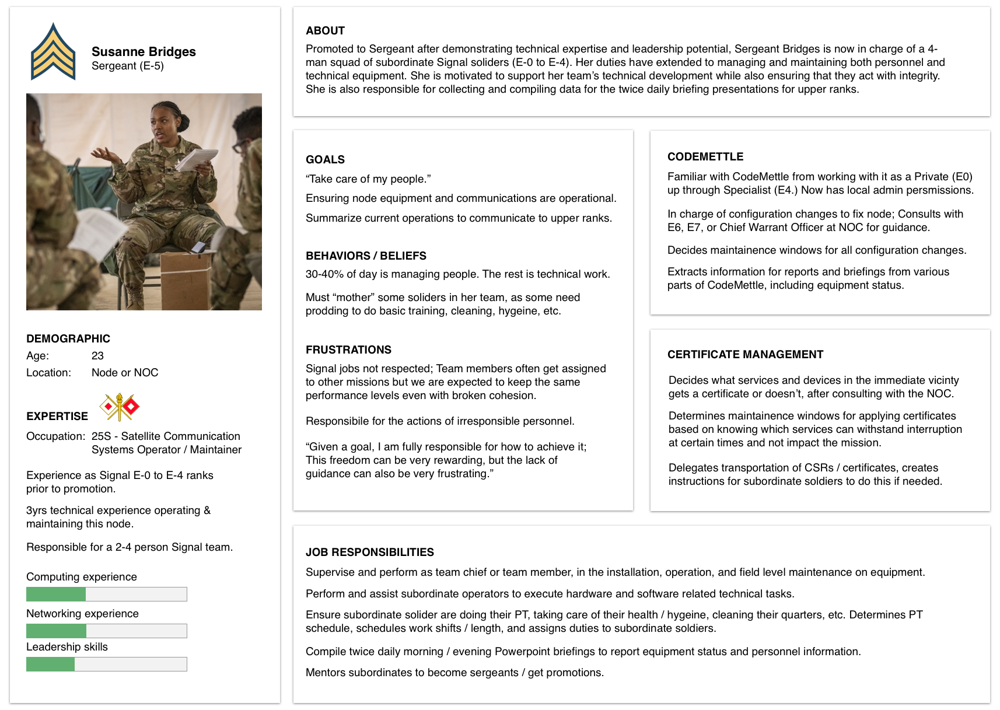
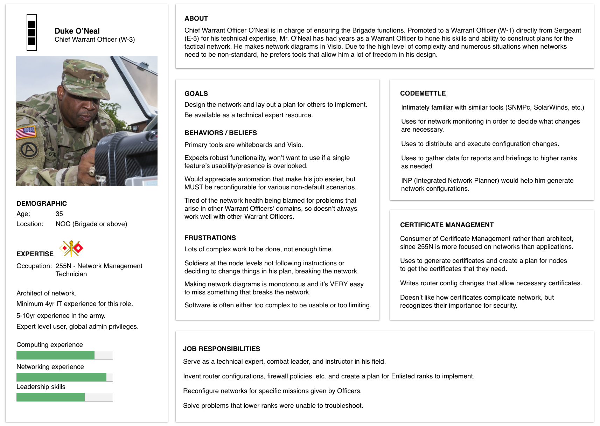
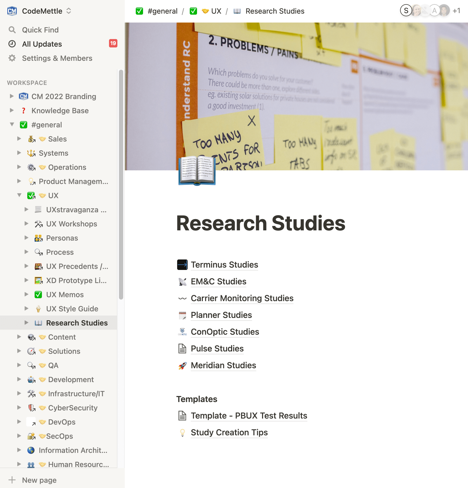
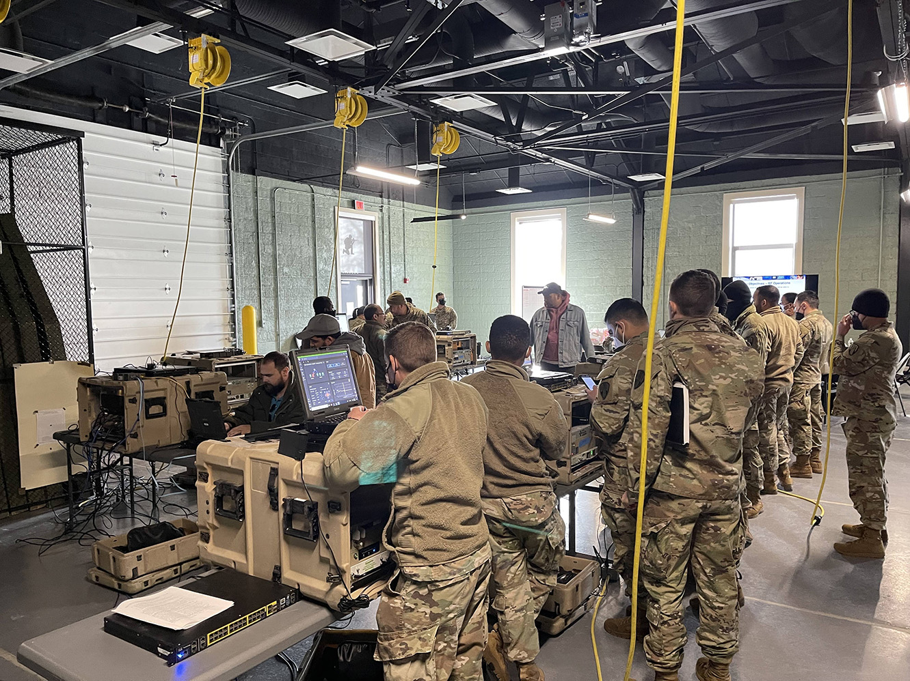
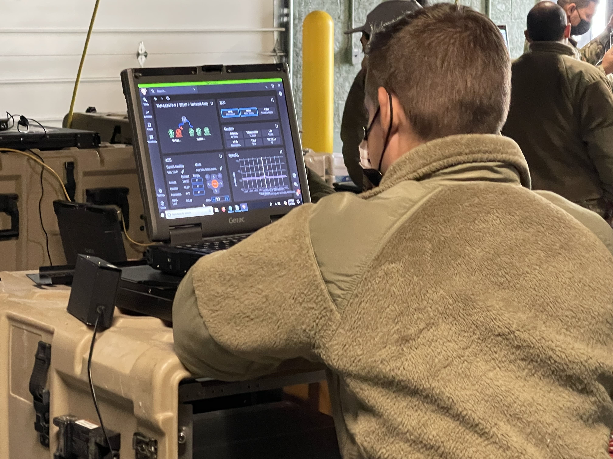

CodeMettle Research Initiative
February 2019 - August 2022
The Problem
CodeMettle historically created custom solutions designed by the engineers who built them. No formal research practices existed. There were strongly held unvalidated assumptions of already knowing what would be best for the user. Multiple layers of civilian contractors, military echelons, and security regulations made end-user access notoriously difficult.
The Solution
Persistent application of various research methods, fit to the unique situation that CodeMettle is in, gradually fostered acceptance and demand for external user research. Documentation and socialization of results and user research benefits was key.
Case Study Details
Team:
UX department of 1 to 5 over timeMy role:
Lead Researcher & StrategistProcesses:
Interviews, contextual inquiry, personas, card sorting, design sprints, design studios, usability testing, affinity mapping, surveying, documentation and presentationProcess
Groundwork
Research practices began simply with what fit into the existing design tasks I had. I found that there were ample opportunities for validating designs in-house, until more broad testing could be added.
{kind=link}
Activities included card sorting, usability testing with paper and digital prototypes, and ample interviews of internal veterans.
{kind=link}
{kind=link}
{kind=link}
For some designs, internal operations employees were also users, as they would use our software to build dashboards for the end-user. This provided easy testing opportunities for designs that aimed to increase productivity and make dashboard creation easier.
Personas
With engineer-driven design as the current norm, my first major goal was to identify the end-user and increase empathy with them across the org. I found that most developers were just as unfamiliar with military settings and job responsbilities as I initially was, and often had to make uninformed design decisions. As the only UXer, I could not oversee every design but I could help operations engineers become more familiar with who they were crafting dashboards for.
   {kind=link}
{kind=link}
{kind=link}
{kind=link}
Through internal veteran interviews and research of Signal soldier job responsibilities, I created personas to represent our major user types. These personas range from recent high school graduate to networking expert. I created templates with an editable project-specific section so that anyone could make use of a relevant persona, even if they did not have a UX designer allocated to their project.
The personas garnered very positive reception and were adopted on various projects. The key benefits were visualization of the end-user, as well as context for how CodeMettle software fits into their overall environment.
Hardware Considerations
An essential part of emphathizing with users involves understanding the equipment our software runs on. For military users, Getac ruggedized laptops are the standard.
I conducted usablity testing on our office Getac and identified several areas for improvement. Developers were often not crafting dashboards in the final resolution of a Getac laptop (1024 x 768), which resulted in undesirable scrolling. The Getac trackpad is difficult to use - add tactical gloves and outside weather conditions to this and you have a usability nightmare.
Promotion of designing, developing, and testing in the final Getac screen resolution cleared up many of these usability issues. Avoiding scrolling and precise gestures wherever possible is a key design focus to this day.
{kind=link}
External User Testing
With growing recognition of the need to test with external users, the UX department got approval for a user testing budget. Due to the pandemic, we opted for remote usability testing using both moderated and unmoderated sessions. After careful analysis of different tools, we chose PlaybookUX as our usability testing platform.
{kind=link}
One challenge for remote external testing of military users was the need to download screen recording software, which is often blocked by security protocols. For these users, we opted to do moderated testing over conference call. I also created a test creation guide to summarize the different testing methods we had, so any of the now 5 UXers could easily design their own tests.
As lead researcher, I also began offering 2 research slots monthly for anyone who wanted help conducting interviews or usability testing. I would help them identify their research focus, design the test/script, set up the PlaybookUX study or conference calls, and moderate sessions if needed. Together we would synthesize the results and document them in Notion. I was also responsible for research program briefings to leadership.
{kind=link}
{kind=link}
Onsite Visits and Surveying
In 2021, I went on-site for usability testing with contractors and field service representatives, who are not exactly our end-user but they do give training to end-users and shape the first impression of the software. They had valuable weigh-in on the usefulness of various features and common pain points that they see when issuing training.
 {kind=link}
{kind=link}
Through the contacts gained there, I met with our first end-users in early 2022 at a software training session. Activities included contextual inquiry, observation, and interviews. We were also able to issue surveys to end-users at other training sessions, which were handed out in the form of physical cards with a QR code and URL link.
These visits and surveys provided a valuable baseline of what our actual users thought about the software, not just the customer and trainer perspective. We were able to hear from users who utilize CodeMettle as just one part of their overall work environment, hear about how it compares to similar tools, and what we can improve. This also laid valuable groundwork for future contacts.
{kind=link}
Further Work
The road to our first end-user feedback was a long journey, paved with persistence and research evangelicalism. Now that the ball is rolling and there is internal demand for further research, there are plenty of exciting opportunities ahead.
My priorities are to continue fostering relationships with military and trainer contacts to keep onsite invitations open. More soldier touchpoints, in-person observation, and continuing to leverage remote testing will be key to our validation efforts.
Surveying also ties in to CodeMettle's brand revitalization effort. Hugely positive results at training sessions indicate great first-impressions of the software. Issuing regular surveys to compare the delta from new to experienced users would be a great opportunity to see how long-term use of the software holds up.